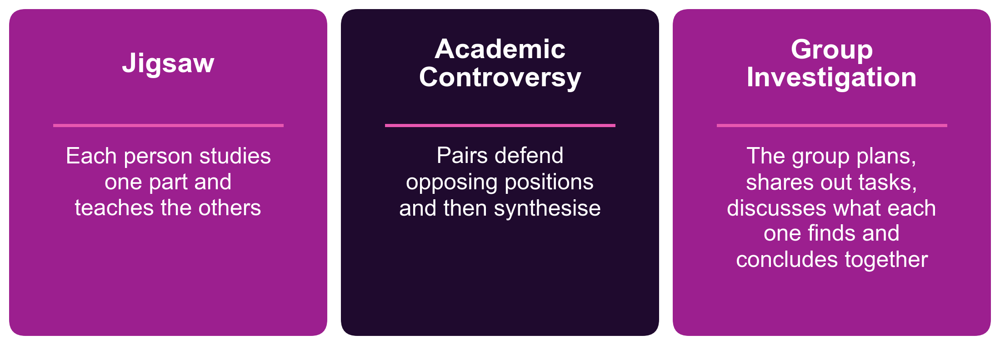
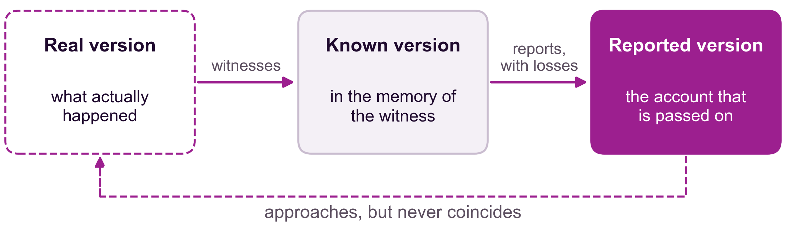
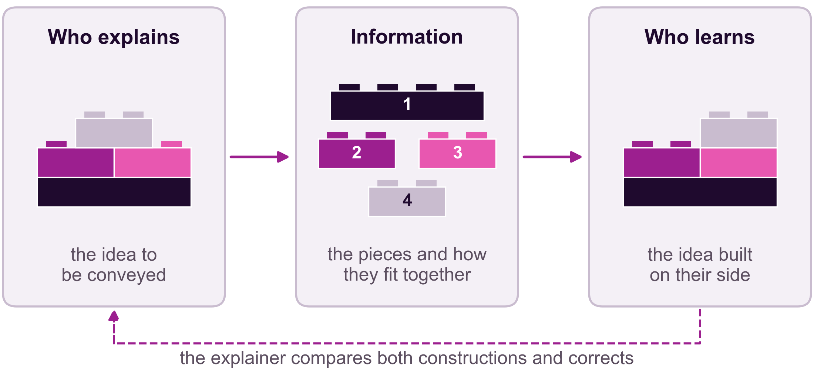

9 Collaborative Learning and Collective Knowledge
Collaborative Learning and Collective Knowledge
Introduction
The first attempts to use the computer in education saw it as an automated teacher: a system that presented content in small pieces, checked answers immediately and reinforced correct behaviours, according to the behaviourist principles of programmed instruction (Castro and Menezes 2011). Learners studied at their own pace, as passive recipients of information. Before the Internet, the computer taught, but it taught alone.
The idea of learning with others is older than those attempts. The study of methods devoted to collaborative learning began in the early twentieth century, with John Dewey, and was taken up with greater intensity from the 1970s onwards, notably in the work of Robert Slavin and other researchers at Johns Hopkins University (Castro and Menezes 2011). In this paradigm, knowledge does not pass ready-made from one person to another: each person builds it. With communication systems and social networks, the computer stops being the teacher and becomes the platform through which people collaborate.
9.1 Collaborative Learning
Learning is an activity arising from the continuous pursuit of adaptation to the physical and social environment, and it happens at every moment of life (Castro and Menezes 2011): when facing new software, a new position or in-company training, as much as in a classroom. Much is learned from others: solving problems together, obtaining explanations of already-solved problems, explaining one’s own solutions, debating the advantages and disadvantages of a choice, giving and receiving criticism and building collective syntheses (Castro and Menezes 2011).
Collaborative learning brings together people who want or need to learn, at school, in a company or in any other context, and rests on two principles (Castro and Menezes 2011):
- people work together in order to learn;
- each person is responsible for their own learning and for that of the others.
These principles imply collective goals: the better they are met, the greater the learning possibilities for each participant (Castro and Menezes 2011). This interdependence is what distinguishes collaborative learning from plain group work.
9.2 Methods of Collaborative Learning
Three methods illustrate concrete ways of structuring collaborative learning (Figure 9.1): Jigsaw, Academic Controversy and Group Investigation. They have a consistent record of use in school settings, are clearly distinct from one another and there are reports of their application with computer support (Castro and Menezes 2011). Nothing prevents their use in other situations where someone wants or needs to learn. In the descriptions below, the guide is the person who prepares and accompanies the activity: a teacher, at school, or whoever takes on that role in another context.

9.2.1 Jigsaw
Jigsaw (a puzzle) was developed by Elliot Aronson in an educational project in Texas, to create a study environment in which everyone is valued, to increase collaboration and sharing and to eliminate excessive competition. The topic is divided into parts and each person explores one of them, bringing their “piece” to the group (Castro and Menezes 2011). The original approach has four stages:
- Introduction: the guide organises the Jigsaw groups (the home groups) and presents the topics and supporting materials.
- Exploration: participants regroup into expert groups and study each topic in depth.
- Report and transformation: each person returns to the home group and explains to the others the topic they studied, on the premise that understanding the whole requires understanding the parts first.
- Integration and evaluation: what the home groups obtained is integrated with everyone and the result is evaluated.
Interdependence is total: each person holds a piece that the others do not have and, without everyone’s contribution, the group cannot reconstruct the complete topic. The guide plays a central role, because asking people to work in groups is not enough: groups with neither structure nor incentive do not achieve positive effects on learning. In the Jigsaw II variant, proposed by Slavin, everyone can read all the content and complement each colleague’s explanation, which simplifies preparation (Castro and Menezes 2011).
An example outside school: a company adopts new software. Each person joins those who were given the same module, studies it with them and returns to their own team to teach it.
9.2.2 Academic Controversy
Academic Controversy seeks consensus when there is disagreement about an idea, piece of information, conclusion, theory or opinion. Intellectual conflicts are inevitable and desirable, because they promote more elaborate reasoning, greater retention and greater creativity than competitive and individualistic learning. To be beneficial, the method requires a collaborative context, heterogeneous participants, relevant information distributed among them and the ability to argue rationally (Castro and Menezes 2011).
The two positions must be in confrontation: positions that are merely different and complementary come together without discussion, a situation that belongs to Jigsaw. A practical criterion makes it possible to check this: accepting one position requires contesting the other, both can be defended with arguments and a synthesis can be built. Each pair’s position is assigned and may not match the opinion of those who defend it, which is what makes the reversal possible.
The method is structured into five activities (Castro and Menezes 2011):
- Preparation: in a group of four people, split into two pairs, each pair receives one of the two positions, researches it and builds its arguments.
- Presentation: each pair presents the best possible argument and listens carefully to that of the other pair.
- Open discussion: the pairs keep defending their position, critically analyse the opposing one and answer criticism.
- Reversal: the pairs swap positions and defend the opposing one, fully and persuasively.
- Synthesis: the group of four meets again and integrates the best ideas from both sides into a single position.
The aim is not to win the debate: it is to reach the best position on the subject and arguments that the whole group can agree with and commit to. In a company considering a change of software, for example, one pair argues “change now” and the other “wait a year”; a possible synthesis is to change now, but only in one team.
9.2.3 Group Investigation
In Group Investigation, participants work in small groups to examine, experiment with and understand the central topics of study. The method combines four components simultaneously (Castro and Menezes 2011):
- investigation: learning is organised as a process of inquiry;
- interaction: the social dimension, communication between group members;
- interpretation: the individual effort to give meaning to the information collected;
- intrinsic motivation: each person’s emotional involvement in what they study.
It unfolds in six stages (Castro and Menezes 2011):
- identifying the topic and organising the groups, by interests and heterogeneously;
- jointly planning what to study and how, dividing tasks and setting goals;
- carrying out the investigation: collecting information, analysing data and drawing conclusions;
- preparing the final report;
- presenting the final report;
- evaluating the work of each group.
The group plans and concludes together; each member carries out their tasks and makes their own interpretation. No one learns in isolation.
9.2.4 Jigsaw or Group Investigation?
Both methods divide work, but they do not divide the same thing (Table 9.1).
| Jigsaw | Group Investigation | |
|---|---|---|
| What is divided | the content to be learned, into parts | the tasks of a joint investigation |
| Who divides | the guide of the activity | the group itself, when planning |
| How it is shared | in a mandatory stage, in which each person teaches their part | through interaction during the work, with no teaching stage |
| What is intended | that each person understands the whole | that the group investigates a topic and presents it in a report |
Both involve division. Only Jigsaw obliges each person to teach their part: Group Investigation provides for interaction and individual interpretation, but the description of the method includes no stage in which each person teaches the others.
9.2.5 Dividing the work is not collaborating
In the Activity Theory model (Section 4.3), the division of labour organises who does what. In the 3C Model (Section 4.4), it corresponds to coordination, one of the three dimensions of collaboration, alongside communication and cooperation (Fuks et al. 2011). Sharing out tasks is necessary, but not enough.
A frequent case is that of a website built by a group: one person does only the HTML, another only the CSS and another only the JavaScript; at the end they join the files and each one knows only their own part. It is an unfinished Jigsaw: the expert group, the teaching of colleagues (stage 3) and the integration and evaluation (stage 4) are missing. It also breaks the principle that each person is responsible for the others’ learning.
To get a job done, awareness in the 3C Model does not require everyone to know everything the others do: it is enough to know what is needed to do one’s own part in coordination with the rest. When the goal is to learn, things are different, because each person needs to understand the whole. If everyone has to know everything, everyone has to teach their part: it is worth setting a moment for this and checking that all of them can explain the three parts.
9.2.6 Essential components
Although different from one another, the three methods share essential components (Castro and Menezes 2011): group goals, which encourage participants to support one another; individual accountability, which requires each member to master the concepts they explain to their colleagues; and equal opportunity for success, which recognises each person for their effort, regardless of their starting abilities.
9.3 Computer Support
Collaboration requires systems to record individual productions, share them, coordinate actions, retrieve the information produced and reflect on the result. Besides communication systems (email, mailing lists, chat and forums), the methods call for support to form groups (by interests, prior knowledge or profile), prepare the activity, explore topics, argue, record and reflect (blogs, wikis), synthesise (glossaries and concept maps), organise content and plan, monitor and evaluate the work (Castro and Menezes 2011).
9.3.1 The three Cs in collaborative learning
Crossing these kinds of support with the 3C Model (Section 4.4) yields the arrangement in Table 9.2. The three Cs do not work in isolation: communication gives rise to commitments, coordination organises them and cooperation brings unforeseen situations that call for further communication (Fuks et al. 2011).
| Dimension | What is done | With what support |
|---|---|---|
| Communication | explaining, arguing and clarifying doubts | forums, chat and videoconferencing (Section 5.2) |
| Coordination | forming groups, planning, sharing out roles and tasks, evaluating | group management, calendars, peer assessment |
| Cooperation | recording, reflecting, synthesising and building together | blogs, wikis, glossaries, concept maps |
In Jigsaw, for example, there is communication when each person explains their part to the others; coordination when the home and expert groups are formed and it is decided who takes each part; and cooperation when the group brings the parts together in a joint synthesis. Awareness, at the centre of the model, is knowing what the others are doing. In a learning activity it also matters to know what each one has already understood, so that it can be compared and corrected.
9.3.2 What each method requires from the platform
When the methods are transposed to computer-mediated contexts, collaboration scripts (CSCL scripts) are used, based on three main schemas (Kobbe et al., 2007, cited by Castro and Menezes 2011). Each places different demands on the platform (Table 9.3).
| Method and schema | How interaction is organised | What the platform must offer |
|---|---|---|
| Jigsaw (Jigsaw schema) | pairs or groups with complementary information | content organised according to the partition of the topic |
| Academic Controversy (conflict schema) | pairs with contradictory opinions, to create socio-cognitive conflict | content grouped for and against, and a forum where roles can alternate |
| Group Investigation (reciprocal schema) | alternating questioning and tutoring roles | search for web resources, for instance through collaborative tagging (Section 3.5) |
Most virtual environments that support teaching and learning replicate rigid structures for organising activities, which are very limiting for the variety of schemas used by these methods (Castro and Menezes 2011). The platform should serve the method, not the other way round.
9.3.3 Current platforms
Table 9.4 suggests ways of setting up each method on current platforms; the choice depends on what each group or organisation already uses. Moodle makes it possible to create groups and groupings, give each group its own forum and use the wiki, glossary and workshop activities, the last being a peer assessment activity, with reviewers allocated manually or at random (Moodle 2026). In Microsoft Teams, the breakout rooms of a meeting can be assigned manually or at random (Microsoft 2026). Miro is a collaborative whiteboard for real-time or asynchronous work, with comments (Miro 2026).
| Method | What is needed | Moodle | Other tool |
|---|---|---|---|
| Jigsaw | home and expert groups; content by part | groups and groupings, with one forum per group | Teams: breakout rooms for each round |
| Academic Controversy | pairs with opposing positions, open discussion and reversal | one forum per pair and a shared forum | Teams: one room per pair and the main room for discussion |
| Group Investigation | planning, recording, synthesising and evaluating | wiki for the report and workshop for assessment | Miro: planning and concept maps |
9.4 Collective Knowledge
Many of the problems solved in organisations today are too complex and multidisciplinary for a single person. Collective knowledge is the combination of the individual knowledge of a group with a common goal, and is richer than the simple sum of that knowledge, because combining different perspectives reveals relationships that are not visible when each piece of knowledge is presented in isolation (Borges 2011).
When a past episode has not been documented, it has to be recovered from the testimonies of those who witnessed it. Storytelling is one way of representing that knowledge, but in complex situations a single person can hardly tell the whole story, because each one knows only a part of it (Borges 2011).
9.4.1 One episode, several accounts
Borges (2011) proposes a hypothetical episode: a chase in a street, recounted by nine witnesses. Table 9.5 presents eight of those accounts, adapted; the ninth is that of Adriana, the owner of a shop where a robbery takes place.
| Witness | Account |
|---|---|
| Mariano, walking down the street | “I saw three men running, two behind and one ahead. It looked like a chase. Shortly afterwards I heard a siren and some cracking sounds that seemed to be gunshots.” |
| Flávia, leaving a shop | “A man who was running bumped into me and knocked me down. I saw a wallet beside me and shouted ‘the wallet!’, but he kept running.” |
| Hugo, police officer on patrol | “I saw a woman on the ground shouting ‘the wallet!’ and three men running away. I thought it was a robbery and went after them.” |
| José, bus driver | “Two men asked to get on and to wait for a third one. When he got in, I closed the door and drove off.” |
| Marcelo, waiting for the bus | “Three men ran past me, and then a fourth, who fired three shots into the air. Further on, I saw a police officer, gun in hand, behind a wall.” |
| Rafael, on the way to the underground | “I saw two men running towards me. In the station, a very nervous woman was saying that the police were chasing drug dealers.” |
| Renata, a friend of Flávia | “I found Flávia lying on the ground. She showed me a wallet and, from the photograph, I recognised the owner: Amauri, my neighbour.” |
| Vanessa, at a seventh-floor window | “I saw people running in all directions and a police officer with a gun in hand. I thought they were pickpockets, shut the window and went back to work.” |
Each narrator selects what to include in the account and interprets what was seen from their own perspective. The accounts mix facts (Marcelo sees a man shooting), interpretations (Mariano hears sounds that seem to him to be gunshots) and speculation (Vanessa supposes that pickpockets are involved). Since those who recount do not always tell these cases apart, it falls to whoever receives the account to identify them and, if necessary, to ask (Borges 2011).
9.4.2 The three versions of an episode
In recovering an episode, three versions are distinguished (Figure 9.2) (Borges 2011):
- the real version, what actually happened, an abstract concept that can rarely be fully reconstructed;
- the known version, held in the mind of whoever witnessed the episode;
- the reported version, the account drawn up from the narrators’ memory.
The known version is tacit knowledge: it is in the mind of the person who holds it and has not yet been formalised. It is concrete for that person, who does not always know everything they know, but abstract for others until it is transmitted. It contrasts with formal (explicit) knowledge, which is recorded and can be consulted by those who were not present. What Hugo saw in the street is tacit; if he tells a colleague, it remains tacit, now in two people; when he writes the report, it becomes formal.

9.4.3 Transmitting knowledge: information and reconstruction
Knowledge can be transmitted through information, when the latter is guided by whoever explains, so that the other person forms the idea that is meant to be conveyed. Knowledge can be thought of as an object built in LEGO (Figure 9.3): the same pieces can be assembled into very different constructions. Information is the pieces and the way they fit together. To transmit is to manage to describe the construction so that the other person assembles the same one on their side, that is, has the same idea.

Whoever explains therefore needs to see what has been assembled, compare and correct: in the figure, the top piece ended up out of place. The pieces the learner already has also count: if pieces are missing, that is, prior knowledge, the best description is not enough. What travels is information; knowledge is reassembled by whoever receives it.
9.4.4 Losses in transmission
Borges (2011) calls two processes transmission of knowledge:
- socialisation, oral explanation, which replicates knowledge in other minds but keeps it at the tacit level and only reaches those present;
- externalisation, or formalisation, the written record, which brings knowledge from the tacit to the formal level and allows it to be shared with more people and expanded.
Both involve losses. Socialisation suffers from the “game of telephone” effect (also known as Chinese whispers): with each new transmission, part of the knowledge is lost and what is passed on changes. In externalisation, it is not always possible to write down everything held in memory.
This is why the reported version differs from the known one: it leaves out what each narrator did not find relevant, forgot or perceived wrongly. In the street episode, no narrator describes the running men, which might have helped to identify them in the other accounts, and Hugo, the police officer, does not mention the shots that Mariano heard and Marcelo saw. Recovering what happened requires combining several versions.
9.5 Group Storytelling
Group storytelling is a story-building technique in which more than one person contributes, synchronously or asynchronously, in the same place or at a distance, through various media. There are several narrators but a single story, which sometimes keeps several versions, to reflect different perspectives or unresolved controversies. Applied to the recovery of knowledge, it seeks to bring the reported version closer to the version known by each participant (Borges 2011).
The technique typically assigns four roles (Borges 2011):
- narrator (the storyteller): a person involved in the episode, or able to contribute to building it, who recounts their version of the facts;
- facilitator: looks for inconsistencies, contradictions and gaps, relates the accounts, raises questions and encourages participation;
- reviewer: identifies ambiguous, incomplete or badly written passages; it is an optional role, because the facilitator can also do it;
- administrator: coordinates the dynamics, invites participants, creates the initial structure and sets deadlines.
Each participant can have more than one role and each role can be performed by more than one person. Recovery depends on a collaborative attitude: if people do not want to collaborate, it is very difficult. Gaps left by memory lapses should not be filled with speculation; conjectures are kept apart from facts, so as not to induce false accounts (Borges 2011).
9.5.1 Relationships between accounts
Accounts of the same episode relate to one another in several ways. Table 9.6 presents four, with examples from the street episode; there are others, such as subsequence, simultaneity and opposition (Borges 2011).
| Relationship | When it occurs | In the street episode |
|---|---|---|
| Confirmation | one account confirms what another has described | Marcelo sees a police officer with a gun in hand; Vanessa, from her window, sees the same |
| Inconsistency | two accounts hold conflicting information | Mariano sees three men running, Rafael sees two and Marcelo sees four |
| Precedence | one event precedes another in time | Flávia falls before Renata arrives and finds her on the ground |
| Gap | information is missing between events for what happened to be understood | the street accounts still have to be linked to that of José, the bus driver |
Representing these relationships in a semantic network, even an incomplete one, helps to organise the events and to see what is missing. Making a gap explicit is also a form of knowledge: it may lead a narrator to remember something, or show that more narrators are needed (Borges 2011).
The relationships are richer when the narrators themselves establish them. By reading the others’ accounts, they change perspective, remember what they had forgotten and expand their own account. This synergy is what makes collective knowledge more than the sum of individual knowledge (Borges 2011).
9.6 Summary
This chapter dealt with learning as a social process and with the collective construction of knowledge:
- Collaborative learning replaces the computer-teacher with a joint construction of knowledge, among people who take responsibility for one another (Castro and Menezes 2011)
- Jigsaw, Academic Controversy and Group Investigation structure interdependence in different ways; only Jigsaw obliges each person to teach their part (Castro and Menezes 2011)
- Dividing the work is not collaborating: coordination has to go together with communication and cooperation (Fuks et al. 2011)
- Collective knowledge is richer than the sum of individual knowledge; recovering an episode distinguishes the real, the known and the reported versions (Borges 2011)
- What is transmitted is information, which whoever receives it has to reconstruct; every transmission involves losses
- Group storytelling collectively recovers knowledge about an episode, through defined roles and by making the relationships between accounts explicit (Borges 2011)
9.7 Food for Thought
Think of a group project, at university, at work or elsewhere, in which you used one of the three methods discussed, even without knowing its name: which one, and how did interdependence between group members go?
And what about group storytelling: have you ever reconstructed, with colleagues or friends, the story of a shared event, each from your own version? What inconsistencies or gaps did you find between the accounts?